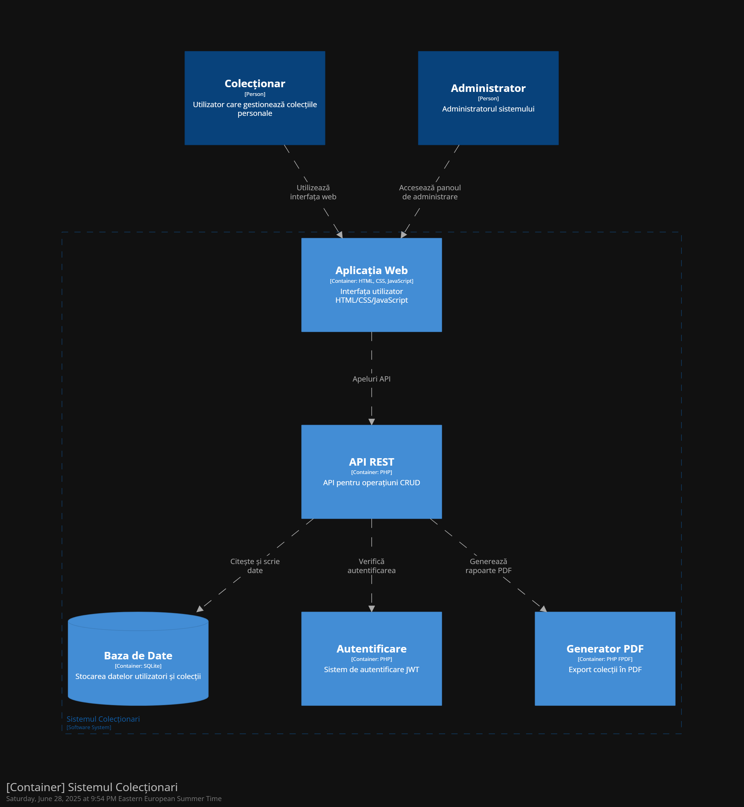

OCo – Obiecte Colecționabile
Abstract
OCo este o aplicație web completă pentru colecționari, care permite gestionarea digitală a colecțiilor, vânzarea și cumpărarea de obiecte, exportul de date (CSV/PDF), vizualizarea de statistici, raportarea de probleme, administrarea utilizatorilor și multe altele, totul într-o interfață modernă și intuitivă.
1. Introducere
Scopul proiectului este de a oferi o soluție pentru colecționari de obiecte care doresc să își organizeze digital colecțiile.
2. Arhitectură
Arhitectura aplicației este monolitică și a fost documentată folosind modelul C4 (Context, Container, Component, Code).
Diagrama C4 dimensiunea 1- Context

Diagrama C4 dimensiunea 2- Container
Diagrama C4 dimensiunea 3- Component

Diagrama C4 dimensiunea 4- Code

2.1 Componente principale
- Frontend: HTML, CSS, JavaScript (Vanilla)
- Backend: PHP
- Bază de date: SQLite
3. Cerințe Funcționale
- Utilizatorii se pot înregistra și autentifica securizat (JWT)
- Utilizatorii pot crea, edita și șterge colecții și obiecte
- Obiectele și colecțiile pot fi puse la vânzare
- Se pot face, accepta sau refuza oferte pentru obiecte și colecții
- Statistici și rapoarte pot fi exportate în CSV și PDF
- Colecțiile și obiectele pot fi filtrate multi-criterial
- Utilizatorii pot vizualiza istoricul tranzacțiilor
- Utilizatorii pot raporta probleme către administratori
- Administratorii pot gestiona utilizatori, colecții, probleme și pot vizualiza istoricul acțiunilor
3.2 Funcționalitate: Autentificare și criptare
Autentificarea se face pe baza unui sistem JWT (JSON Web Token)
implementat în PHP. Parolele sunt criptate cu
password_hash() și validate cu
password_verify(). Tokenul JWT este verificat la fiecare
cerere către API pentru securitate sporită.
3.3 Funcționalitate: Creare și gestionare colecții și obiecte
Utilizatorii pot crea, edita și șterge colecții și obiecte. Fiecare colecție poate conține mai multe obiecte, fiecare cu detalii precum titlu, imagine, valoare, țară, an, material, perioadă, etichetă, descriere și istoric.
3.4 Funcționalitate: Vânzare și cumpărare
Obiectele și colecțiile pot fi puse la vânzare. Alți utilizatori pot trimite oferte, iar proprietarul poate accepta sau refuza ofertele. Tranzacțiile sunt înregistrate și pot fi consultate în istoricul personal.
3.5 Funcționalitate: Export date (CSV/PDF)
Utilizatorii pot exporta colecțiile, obiectele și statisticile în format CSV sau PDF, folosind scripturi PHP dedicate (FPDF pentru PDF). Exportul se face la cerere, pe baza datelor actuale din baza de date.
3.6 Funcționalitate: Filtrare și statistici
Se pot aplica filtre complexe pe colecții și obiecte (după titlu, valoare, an, țară, etichetă, material, perioadă). Utilizatorii pot vizualiza statistici grafice despre colecțiile și obiectele lor.
3.7 Funcționalitate: Administrare și raportare probleme
Utilizatorii pot raporta probleme sau sugestii, care ajung la administratori. Administratorii pot gestiona utilizatorii, colecțiile, problemele raportate și pot vizualiza istoricul acțiunilor administrative.
4. Cerințe Non-Funcționale
- Aplicația rulează local cu XAMPP
- Frontend responsive în HTML/CSS
- Imaginile sunt stocate local
- Codul este open-source sub licență MIT
4.1 Măsuri de validare și securitate
Toate datele sunt validate client-side și server-side. Parolele sunt
criptate, SQL Injection este prevenit cu PDO::prepare(),
iar atacurile XSS sunt limitate cu htmlspecialchars().
5. Interfață și design
Design-ul este minimalist, cu contrast puternic pentru lizibilitate, structurat pe carduri și optimizat pentru mobil. Nu sunt folosite framework-uri externe.
6. Modelare date
-
users: id, username, password, email, image_url, admin -
colectii: id, user, titlu, nr_obiecte, imagine, tip, pret, data_adaugare -
obiecte: id, colectie_id, titlu, categorie, material, valoare, tara, perioada, istoric, eticheta, descriere, an, imagine, de_vanzare, pret, proprietar, data_adaugare -
oferte: id, id_obiect, user, pret, contract, adresa, status, data -
oferte_colectii: id, id_colectie, user, pret, contract, adresa, status, data -
tranzactii: id, id_obiect, titlu, imagine, ofertant, proprietar, pret, contract, adresa, status, data -
tranzactii_colectii: id, id_colectie, titlu, imagine, ofertant, proprietar, pret, contract, adresa, status, data probleme: id, user, mesaj, data, statusadmin_actiuni: id, admin_user, actiune, data
Datele de test au fost introduse manual pentru a acoperi scenarii variate.
7. Licență
Proiectul este distribuit sub licență MIT. Toate resursele utilizate respectă Creative Commons sau au fost dezvoltate manual.
8. Prezentare video
Demo video